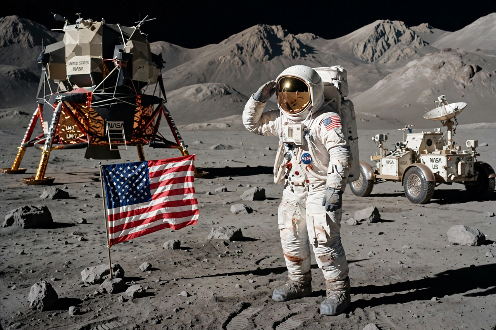

David Scott (astronaut)
From Wikipedia, the free encyclopedia
| David Scott (astronaut) | |
|---|---|
| Born | 6 June 1932, San Antonio, Texas |
| Occupation | Astronaut, Air Force officer |
| Missions | Gemini 8, Apollo 9, Apollo 15 |

Scott salutes at Hadley Rille, 1971.David Randolph Scott (born 1932) is an American retired test pilot and NASA astronaut who flew on Gemini 8, Apollo 9, and commanded Apollo 15, becoming the seventh person to walk on the Moon. He is one of only four surviving Moonwalkers and the only commander of a lunar landing mission still living.
On Gemini 8 (1966), Scott and Neil Armstrong performed the first docking of two vehicles in space, then survived the first serious in-flight emergency in American spaceflight when a stuck thruster sent the docked craft tumbling violently — Armstrong's piloting saved the mission.
Apollo 15
Apollo 15 (1971) was the first of the extended 'J' missions: Scott and James Irwin spent three days at Hadley Rille, drove the first Lunar Roving Vehicle, and found the famous 'Genesis Rock', a piece of ancient lunar crust. From the surface Scott dropped a hammer and a feather together on live television, showing they fell at the same rate in vacuum — Galileo's principle demonstrated on the Moon. The mission's reputation was later clouded by the unauthorised postal covers the crew had carried and sold; Scott never flew again.
See also
Apollo 9 · Lunar Roving Vehicle · Neil Armstrong · Apollo program